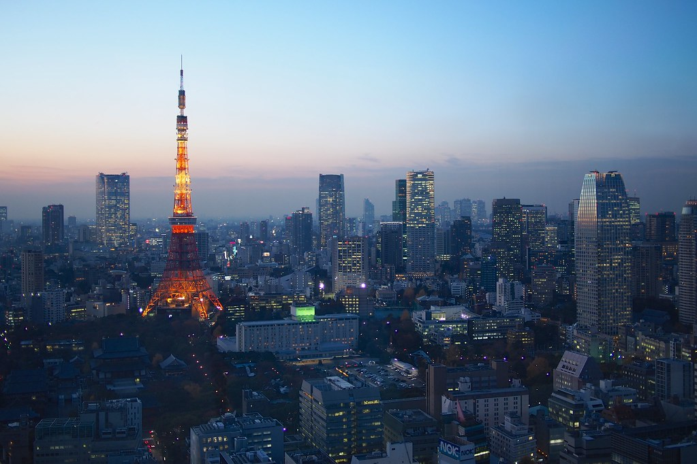
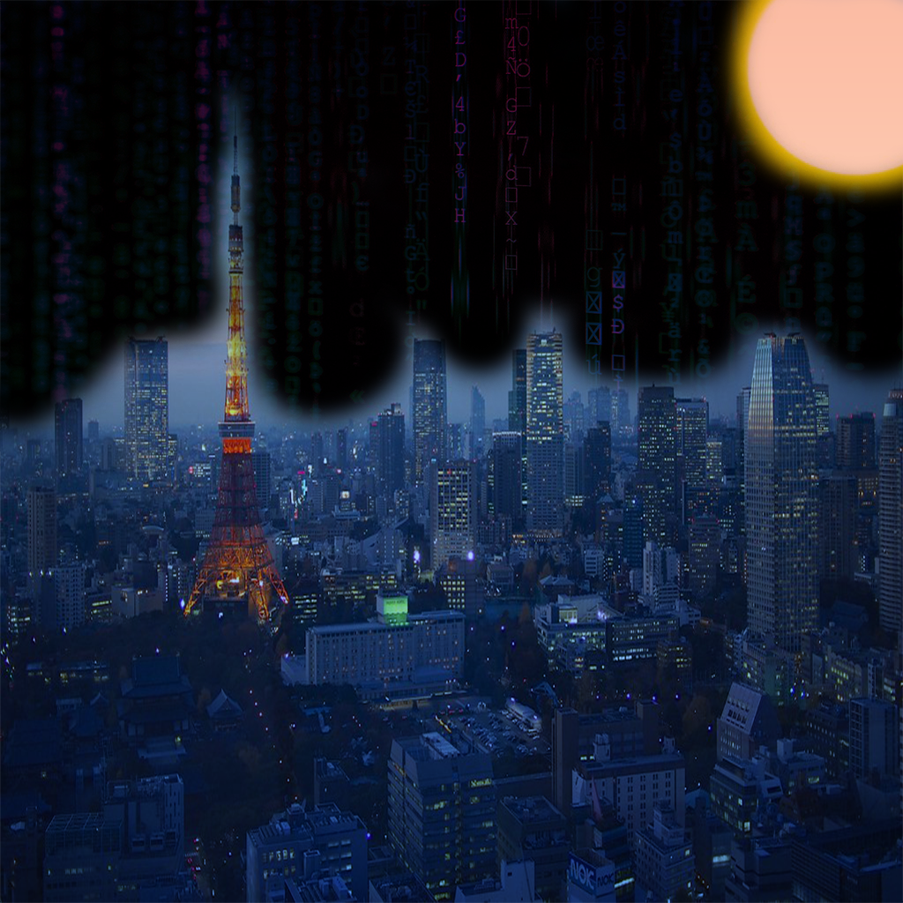

This imaginary place that Ren originate from Tokyo plus virtualization together. When he wears and activates the virtural glasses, it displays computer screens around him and Tokyo is computerized. This imaginary place is special to him because its all about the reality of technology.
  "Blue Hour over Tokyo" by Schwarzkaefer is licensed under CC BY 2.0